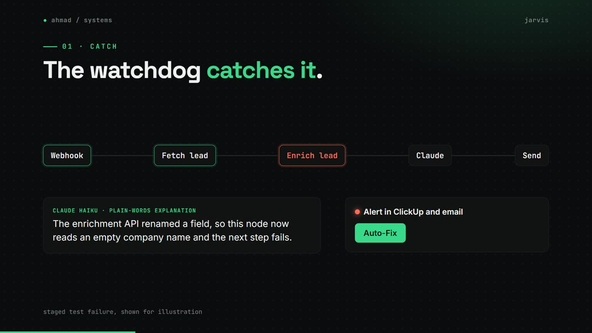
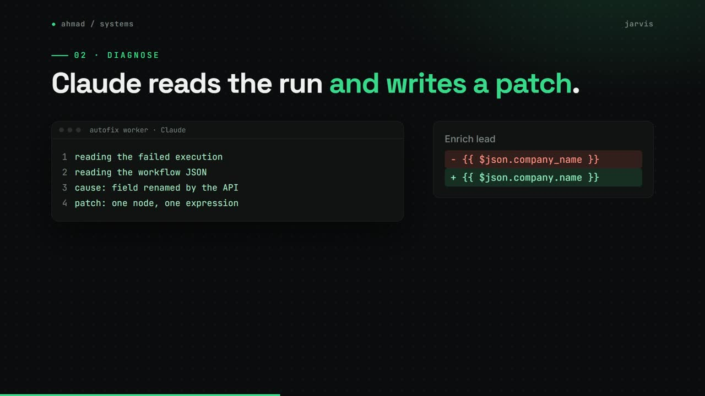
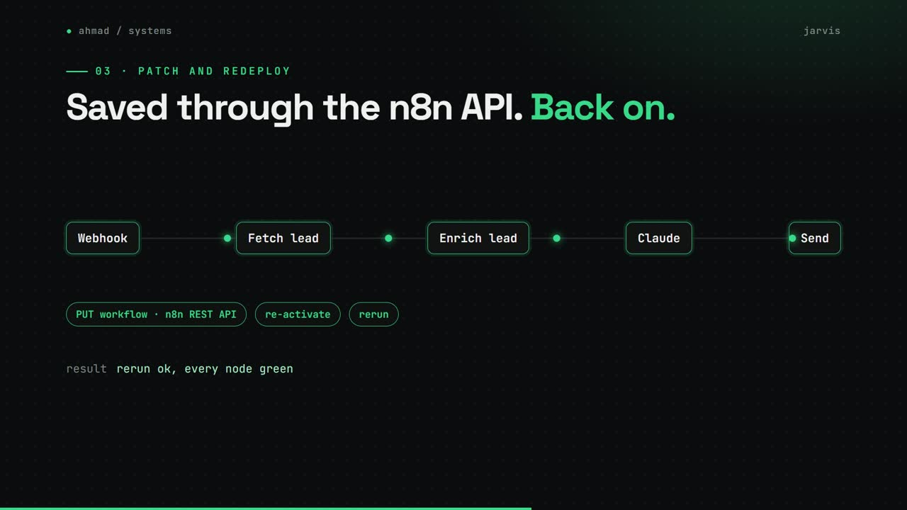
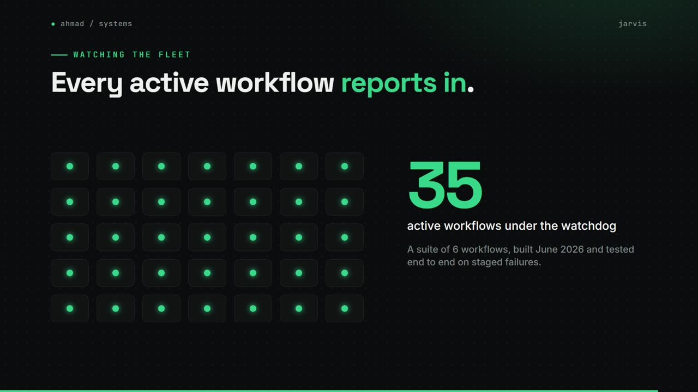

Jarvis
A self-healing layer for n8n: failures are caught, explained by Claude and patched through the n8n API.
my role Designed and built the six-workflow suite.
The problem
Soch runs dozens of n8n workflows. When one failed, someone had to notice, open the execution, find the cause and fix it by hand.
How it works
- An error trigger on every active workflow catches the failure, and Claude Haiku explains it in plain words.
- The alert lands in ClickUp and email with an Auto-Fix button.
- Auto-Fix queues the job. A worker pulls the failed execution and the workflow, and Claude returns a patched workflow with a summary.
- The worker saves the patch through the n8n API, turns the workflow back on and emails a fix report.
- A morning briefing rolls up email, ClickUp, the calendar and the last 24 hours of failures into one message.
What changed
- 35active workflows under the watchdog
- $0.01or less per automated fix
- 6workflows in the suite
What I built
- All six workflows in the suite, from the failure watchdog to the morning briefing.
- End to end tests on staged failures before it went live.
- The watchdog now covers all 35 active workflows; the auto-fix chain stays switched off until it is needed.
Stack
- n8n
- n8n REST API
- Claude Haiku
- Claude Sonnet
- Google Sheets
- Gmail
- ClickUp
Stills



